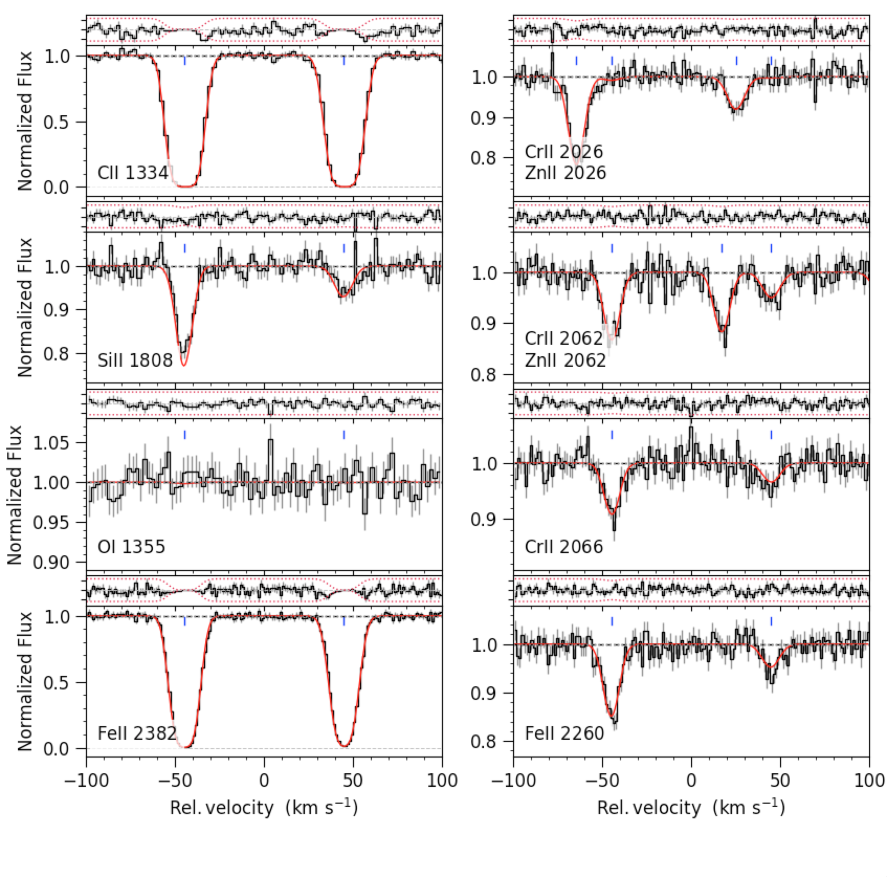

____ _ _________________________________________
\/ \ _/\ /
\/ \ / oigtFit
\/
Results of Physical Model¶
The physical model assumes that the b-parameter of each component can be described by a common turbulent term, \(b_{turb}\), and a thermal term, \(\sqrt{2 k_B T / m}\):
\[b_{eff}^2 = b_{turb}^2 + \frac{2 k_B T}{m} ,\]
where m is the atomic mass of the given ion.
The model thus expands the regular set of parameters to include
a temperature and turbulent velocity for each component, however,
these extra parameters are simultaneously constrained by several
transitions of different elements.
For the exact implementation of this model, see the script
physical_model.py in the scripts folder, or have a look at the predefined input file
thermal_model.pars in the test_data folder.
Best fit parameters¶
Fitting the simulated test data with two components at redshifts z=0.003300 and z=0.003600, we recover the following parameters:
CrII : 2026, 2056, 2062, 2066
z = 0.003299 b = 4.75 ± 0.01 log(N) = 12.581 ± 0.034
z = 0.003599 b = 5.44 ± 0.01 log(N) = 12.167 ± 0.084
SiII : 1260, 1304, 1526, 1808
z = 0.003299 b = 4.84 ± 0.01 log(N) = 14.461 ± 0.006
z = 0.003599 b = 5.67 ± 0.01 log(N) = 13.955 ± 0.003
FeII : 1260, 1608, 1611, 2249, 2260, 2344, 2374, 2382
z = 0.003299 b = 4.74 ± 0.01 log(N) = 14.065 ± 0.004
z = 0.003599 b = 5.42 ± 0.01 log(N) = 13.589 ± 0.003
CII : 1036, 1334
z = 0.003299 b = 5.11 ± 0.03 log(N) = 15.345 ± 0.016
z = 0.003599 b = 6.28 ± 0.02 log(N) = 14.763 ± 0.006
OI : 1039, 1302, 1355
z = 0.003299 b = 4.99 ± 0.02 log(N) = 15.709 ± 0.010
z = 0.003599 b = 6.02 ± 0.02 log(N) = 15.173 ± 0.005
ZnII : 2026, 2062
z = 0.003299 b = 4.72 ± 0.01 log(N) = 12.007 ± 0.030
z = 0.003599 b = 5.38 ± 0.00 log(N) = 11.577 ± 0.082
SII : 1250, 1253, 1259
z = 0.003299 b = 4.82 ± 0.01 log(N) = 14.176 ± 0.012
z = 0.003599 b = 5.61 ± 0.01 log(N) = 13.701 ± 0.035
The best-fit is plotted and saved to PDF file: test_2comp.pdf.
Below you see a screenshot of some of the fitted lines:
{kind=link}
Total Abundances¶
The total abundances from the fit are:
logN(CrII) = 12.72 ± 0.03
logN(SiII) = 14.58 ± 0.01
logN(FeII) = 14.19 ± 0.01
logN(CII) = 15.45 ± 0.01
logN(OI) = 15.82 ± 0.01
logN(ZnII) = 12.15 ± 0.03
logN(SII) = 14.30 ± 0.01
Notice that the column densities for the saturated lines OI and CII are overestimated. This is not surprising, as it is almost impossible to accurately constrain the column densities for such strong lines.
Physical Parameters¶
The input physical parameters and the recovered best-fit parameters are as follows:
| Comp. No: | Temperature [K] | Turbulence [km/s] | ||
|---|---|---|---|---|
| Best-fit | Input | Best-fit | Input | |
| 0 | 3380 ± 268 | 4370 | 4.63 ± 0.02 | 4.60 |
| 1 | 9280 ± 206 | 8600 | 5.16 ± 0.0002 | 5.20 |
The Input Column Densities¶
The table below highlights the input column densities that were used to generate the synthetic data:
| Ion | log(N1) | log(N2) | log(Ntot) |
|---|---|---|---|
| CrII | 12.58 | 12.10 | 12.70 |
| SiII | 14.43 | 13.95 | 14.55 |
| FeII | 14.07 | 13.59 | 14.19 |
| CII | 15.20 | 14.72 | 15.32 |
| OI | 15.64 | 15.16 | 15.76 |
| ZnII | 12.02 | 11.54 | 12.14 |
| SII | 14.17 | 13.69 | 14.29 |